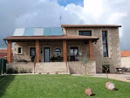

Casa 1
Casa Las Jaras se encuentra cerca de la ciudad de Córdoba, dentro de una tranquila urbanización, se encuentra esta bonita casa. Es un sitio ideal para descansar en el campo rodeados de naturaleza. Tiene dos terrazas desde las que se puede contemplar el paisaje verde de sierra. El interior está bien equipado, dispone de tres dormitorios, un amplio salón con chimenea, una cocina y un baño.
 5 personas
5 personas- Con internet
 Si animales
Si animales Piscina climatizada
Piscina climatizada

 No animales
No animales Sin internet
Sin internet